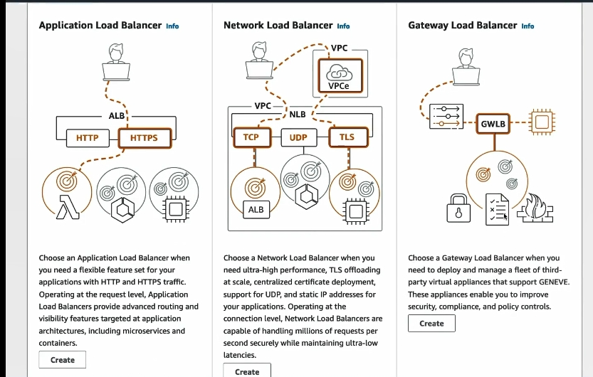

Elastic load balancer
Tổng quan về Load Balancing (Cân bằng tải)
Load Balancing là gì?
Cân bằng tải là kỹ thuật phân phối lưu lượng truy cập đến nhiều tài nguyên backend (ví dụ: các instance EC2) để đảm bảo: - Sử dụng tài nguyên hiệu quả. - Tăng độ tin cậy và khả năng chịu lỗi cho hệ thống.
Cách hoạt động
- Người dùng kết nối tới một điểm duy nhất: Elastic Load Balancer (ELB).
- ELB phân phối lưu lượng truy cập tới nhiều instance EC2 backend dựa trên tải.
- Người dùng không biết được họ đang kết nối với backend cụ thể nào, chỉ thấy endpoint của load balancer.
Lợi ích của Load Balancer
- Một điểm truy cập duy nhất: Giúp đơn giản hóa việc kết nối cho người dùng.
- Xử lý lỗi: ELB có cơ chế kiểm tra sức khỏe (health check) để phát hiện các instance không hoạt động và không gửi lưu lượng đến đó.
- Cung cấp SSL Termination: Hỗ trợ mã hóa HTTPS.
- Tăng cường bảo mật:
- Chỉ cho phép lưu lượng từ ELB đến các instance.
- Tách biệt lưu lượng công khai (public) và riêng tư (private).
- Khả năng mở rộng tự động: Tích hợp với các dịch vụ AWS khác như Auto Scaling, Amazon ECS, và CloudWatch.
- Managed service: mọi thứ tự động bởi aws nên không cần phải tự quản lý, cài đặt chỉ cần sử dụng
Các loại Load Balancer trên AWS
AWS cung cấp bốn loại ELB:
-
Classic Load Balancer (CLB):
-
Hiện đã bị coi là lỗi thời.
-
Application Load Balancer (ALB):
- Ra mắt năm 2016, hỗ trợ HTTP, HTTPS, WebSocket.
-
Phù hợp với ứng dụng dựa trên tầng 7 (Layer 7).
-
Network Load Balancer (NLB):
- Ra mắt năm 2017, hỗ trợ TCP, UDP, TLS.
- Dùng cho các ứng dụng tầng 4 (Layer 4) đòi hỏi hiệu suất cao.
-
Có hiệu suất cao hơn với độ trễ thấp vì hoạt động ở lớp thấp hơn và ít xử lý hơn. Xử lý hàng triệu yêu cầu mỗi giây. Thích hợp cho các hệ thống yêu cầu thời gian thực.
-
Gateway Load Balancer (GWLB):
- Ra mắt năm 2020, hoạt động ở tầng mạng (Layer 3), hỗ trợ IP Protocol.
- Phù hợp với các ứng dụng mạng phức tạp.
Kiểm tra sức khỏe (Health Check)
- ELB thường xuyên kiểm tra trạng thái của các EC2 instance qua:
- Giao thức: HTTP, HTTPS.
- Cổng: Ví dụ 4567.
- Endpoint: Ví dụ
/health. - Nếu instance không trả về mã phản hồi "OK" (HTTP 200), nó sẽ bị đánh dấu là không khỏe mạnh và không nhận lưu lượng.
Bảo mật Load Balancer
- Kết nối từ người dùng đến ELB:
- Chấp nhận lưu lượng qua cổng 80 (HTTP) hoặc 443 (HTTPS).
-
Nguồn: Tất cả mọi nơi (0.0.0.0/0).
-
Kết nối từ ELB đến EC2:
- Chỉ cho phép lưu lượng từ security groups của ELB đến security groups của EC2, đảm bảo lưu lượng đến từ nguồn đáng tin cậy.
Hoàn thiện thông tin về Elastic Load Balancer (ELB)
1. So sánh chi tiết giữa các loại Load Balancer
| Đặc điểm | CLB | ALB | NLB | GWLB |
|---|---|---|---|---|
| Giao thức hỗ trợ | HTTP, HTTPS, TCP, SSL | HTTP, HTTPS, WebSocket | TCP, UDP, TLS | IP Protocol |
| Tầng OSI | Layer 4 và Layer 7 | Layer 7 | Layer 4 | Layer 3 |
| Tích hợp Lambda | Không | Có | Không | Không |
| Hiệu suất | Thấp hơn ALB và NLB | Tối ưu cho HTTP/HTTPS | Tối ưu cho TCP/UDP | Tối ưu cho các dịch vụ mạng |
| SSL Termination | Có | Có | Có | Không |
| Kiểm tra sức khỏe | Cơ bản | Nâng cao (theo URL cụ thể) | Cơ bản | Cơ bản |
| Use Case | Legacy systems | Ứng dụng Web, API Gateway | Ứng dụng cần băng thông cao | Tường lửa hoặc mạng phức tạp |
2. Tình huống sử dụng cụ thể (Use Cases)
- Application Load Balancer (ALB):
- Ứng dụng Web-based hoặc RESTful APIs.
- Triển khai container với Amazon ECS hoặc EKS.
-
Dùng để phân phối lưu lượng dựa trên Path-based Routing (ví dụ:
/apichuyển đến một dịch vụ,/userchuyển đến dịch vụ khác). -
Network Load Balancer (NLB):
- Ứng dụng yêu cầu tốc độ phản hồi thấp với băng thông cao.
- Hỗ trợ sticky sessions với IP của client.
-
Dùng cho các giao thức không phải HTTP, ví dụ như gaming server hoặc IoT systems.
-
Gateway Load Balancer (GWLB):
- Thích hợp cho tường lửa (firewall), NAT Gateway, hoặc kiểm soát mạng phức tạp.
- Phân phối lưu lượng qua các thiết bị mạng ảo như Fortinet hoặc Palo Alto.
3. Giới hạn (Limits) của Elastic Load Balancer
AWS ELB có một số giới hạn mặc định mà bạn cần lưu ý:
| Giới hạn | Mặc định | Có thể tăng |
|---|---|---|
| Số lượng Load Balancers mỗi vùng (region) | 50 | Có |
| Số lượng Listeners mỗi Load Balancer | 50 | Có |
| Số Rules trên ALB | 100 | Có |
| Số mục kiểm tra sức khỏe (Targets) | 2000/Target Group | Có |
4. Các tính năng bổ sung (Advanced Features)
- Sticky Sessions:
- ALB và NLB hỗ trợ sticky sessions để đảm bảo yêu cầu của người dùng quay lại cùng một instance.
-
Dùng cookie hoặc IP của client.
-
Cross-Zone Load Balancing:
- Phân phối đều lưu lượng giữa các Availability Zones (AZs).
-
Hỗ trợ bởi cả CLB, ALB, NLB.
-
HTTP/2 và gRPC Support:
-
ALB hỗ trợ HTTP/2 và gRPC, cải thiện hiệu suất giao tiếp giữa các microservices.
-
SNI (Server Name Indication):
-
ALB và NLB hỗ trợ SNI, cho phép nhiều chứng chỉ SSL trên cùng một listener.
-
WAF Integration:
- ALB có thể tích hợp với AWS WAF để bảo vệ ứng dụng khỏi các cuộc tấn công như DDoS, SQL Injection.
5. Các chiến lược tối ưu hóa
- Sử dụng Auto Scaling với ELB:
- ELB hoạt động tốt nhất khi kết hợp với Auto Scaling Groups để tự động thêm hoặc bớt instance dựa trên lưu lượng thực tế.
- Tích hợp CloudWatch:
- Theo dõi các thông số như latency, target response time, và HTTP codes để tối ưu hóa hiệu suất.
- Kết hợp với Route 53:
- Dùng Route 53 để thực hiện routing DNS theo địa lý hoặc tỷ lệ tải (Weighted Routing).
6. Case Study
Ví dụ thực tế:
Một công ty thương mại điện tử sử dụng ALB để quản lý lưu lượng người dùng mua sắm trực tuyến:
- Routing: Phân phối lưu lượng /checkout đến nhóm backend xử lý thanh toán và /catalog đến nhóm xử lý hiển thị sản phẩm.
- HTTPS: Dùng ALB với chứng chỉ SSL do AWS Certificate Manager cung cấp để bảo mật lưu lượng.
- Tự động mở rộng: Tích hợp với Auto Scaling để đảm bảo hệ thống có thể xử lý tăng trưởng đột ngột trong dịp khuyến mãi.

- Load Balancer là 1 dịch vụ Cross Zone, lưu ý khi tạo ELB nhớ chọn tối đa số zone có thể chọn. Nếu Load Balancer được tạo không chọn zone có chứa ec2 instance, khi access sẽ bị lỗi không kết nối được (502 Bad Gateway